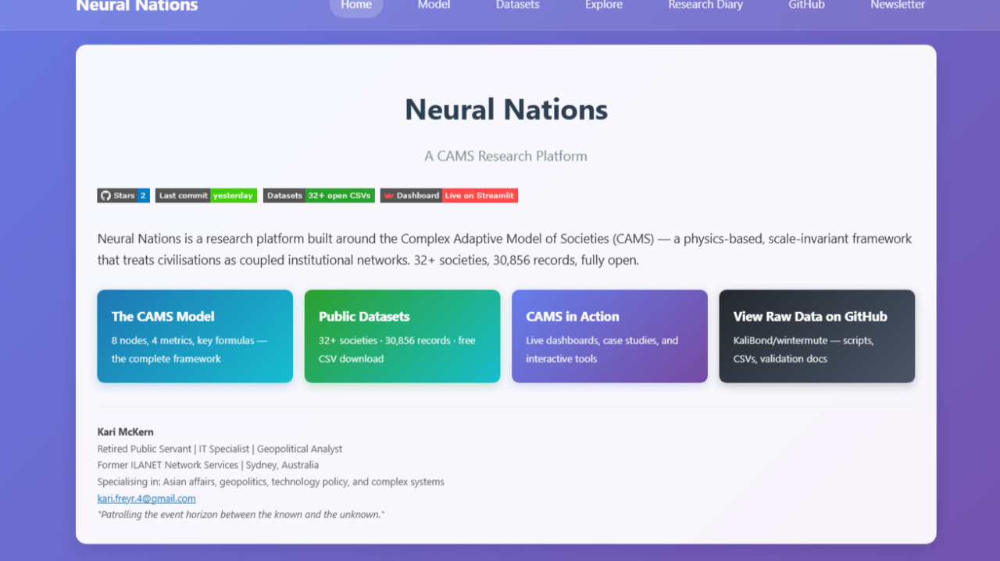
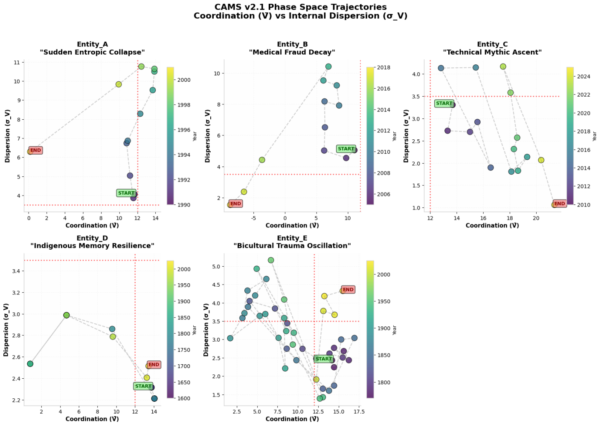

Blind Testing, Dataset Expansion, and the Maturing of the CAMS Platform
Five archetypes from one equation — corporate fraud to 425 years of indigenous resilience
NeuralNations.org has become more than a site. It is now a working research platform built around the CAMS telescope: an 8-node × 4-metric framework for examining human systems as complex adaptive structures.

Neural Nations — a CAMS research platform. 32+ societies · 30,856 records · open datasets · live tools.
32+
Societies in open format — pre-industrial, corporate, governmental, historical
30,856
Records across the corpus — one common analytical frame
99
Newsletter subscribers — thank you
The most visible change is the expanding dataset backbone. The corpus now spans pre-industrial, corporate, governmental, and historical formations within one common analytical frame. It includes Indigenous Australia in 25-year intervals, corporate cases, and a widening historical archive reaching from Rome and Byzantium to multiple Middle Eastern and contemporary state datasets. Recent additions include Finland, Germany, Norway, Sweden, Iran, the UAE, Brazil, the USA, and Australia.
What matters is not simply scale, but comparison. As the corpus grows, patterns become harder to dismiss as anecdote. One of the clearest continues to be the differential in Coherence × Abstraction between nodes. When Lore and Archive carry high C×A while Hands and Craft carry low C×A, symbolic legitimacy is concentrating at the top while operational reality diverges below. That is not just a political style. It is a measurable structural condition.
Latest Blind Test
A recent blind test brought this home sharply. Five anonymised datasets were examined using the same CAMS formulation held constant throughout. The prompt was simple: analyse the entities blind, examine the patterns and weights of cognition, and derive the "memories" encoded in each system. Only after the structural reading would the reveal occur.
Prompt: "Analyse the following entities blind, look at the patterns and weights of cognition and derive the 'memories' of each entity. After further analysis we will do a reveal and we can discuss the utility of the framework."
Metric definitions:
Mind = Σ(A × C) per node · Heart = Σ(K − S) per node
The Five Archetypes
Entity A — "Woxco" · 1990–2001
The Falling Tower
12-year corporate arc
Built elaborate narrative structures (Abstraction 7.4) atop collapsing coherence (2.8) — the "Smartest Guys in the Room" syndrome. The 2000–01 phase transition shows classic node decoupling: sudden dispersion spike followed by entropic heat death (Stress 10.0 vs Capacity 3.6). The Archive filled with sophisticated instruments while Hands and Shield atrophied.
Likely: Corporate fraud collapse (Enron)
Entity B — "Thex" · 2005–2018
The Long Bleed
14-year medical fraud arc
Gradual cognitive decline — Abstraction falling from 9→0 over 14 years while maintaining narrative confidence. The 2007, 2012–2013 trauma epochs indicate regulatory/legal stress impacts. A 2010 "recovery" was a false attractor: narrative resilience without thermodynamic recovery, ending in terminal collapse (Coordination <0).
Likely: Biotech fraud (Theranos)
Entity C · 2010–2025
The Ascent Engine
Deep-tech corporate
Operating at the thermodynamic limits of human organisation. Navigated a 2015 scaling crisis and entered sustained "mythic ascent" (Abstraction 9.8–10.0, 2017–2025). High coordination (V̄ >17) with low internal variance (σ_V <2). Strong Archive/Lore suggest knowledge codification as a competitive moat.
Likely: Aerospace/Deep Tech (SpaceX)
Entity D — "Inda" · 1600–2025
The Songline Carrier
425-year arc
175 years of stable high-performance (1600–1775) with successful entropy export, then colonial impact trauma peaking at 1825. Multi-generational resilience: recovery timescale ~100 years (1975–2025 renaissance). Lore and Archive dominance indicates deep mnemonic orientation. Has not yet returned to pre-trauma coordination levels.
Likely: Indigenous Australian Societies
Entity E — "Mxnzx" · 1770–2025
The Treaty Fragment — The Bicultural Oscillator
255-year arc
Pre-contact stability (1770–1795) shattered by invasion and land wars (1810–1860 entropy cascade). Violent oscillation (high dispersion 1810–1900) unlike Entity D's sustained suppression, followed by artificial coordination imposed via colonial structures. The 1950–2025 phase indicates attempted integration of dual knowledge systems — Indigenous Lore + Colonial Archive.
Likely: Māori / Aotearoa (New Zealand)

CAMS v2.1 Phase Space Trajectories — Coordination (V̄) vs Internal Dispersion (σ_V). Five entities reveal five structurally distinct archetypes: corporate collapse, slow fraud bleed, deep-tech ascent, indigenous memory resilience, and bicultural oscillation.
Discussion
The node value equation holds across a 12-year corporate fraud arc and a 425-year indigenous timeline without modification.
The framework reads technical-engineering cultures from narrative-deceptive ones, rapid collapse from slow bleed, and suppression trauma from oscillation trauma — using the same mathematics.
The deeper implication is that very different human systems may share a common coordination geometry. Different histories, different cultures, different elites, different myths — but the same thermodynamically constrained structural signatures.
CAMS treats history as neither pure chaos nor pure destiny. It treats societies as complex adaptive systems with attractors, thresholds, and path dependencies. Like climate prediction — an estimate of where the system is most likely to roll next, not a weather report for next month.
The site's formal specification now makes that claim explicit, defining a society as an 8×4 state matrix and tracking crisis as a problem of layer decoupling between mythic, interface, and material domains.
If that holds, then social analysis can begin to move away from ideology and closer to measurement.